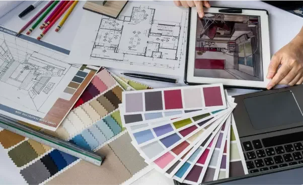
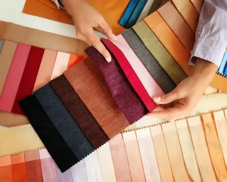
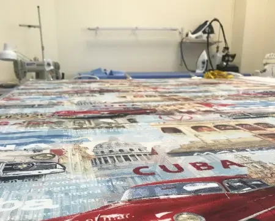
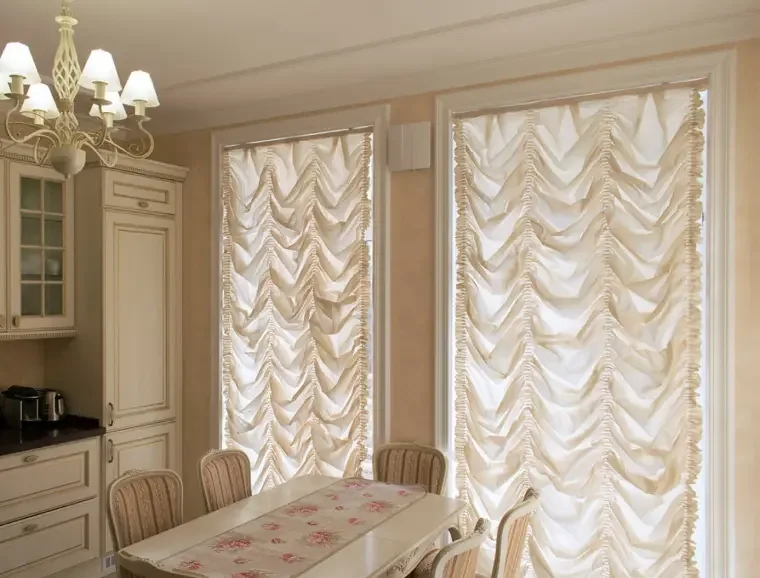

Материалы прежнего сайта сохранены с датами публикации. Упоминания трендов относятся к указанному году; актуальные условия заказа уточните у мастерской.
Друзья, вот и наступила весна! Пришло время барбекю на улице!
Именно сейчас мы предлагаем приодеть вашу уличную мебель: диваны, шезлонги, беседки и качели, украсить их интересными яркими подушками и повесить шторы.
Наша мастерская предлагает вам визуализацию и качественный пошив.
Ткани из этой коллекции сделают уютными вашу уличную мебель. Уличные ткани обладают водоотталкивающими свойствами, а также устойчивы к выцветанию.
Встречайте новый весенне-летний сезон в обновлённой обстановке!
Архив мастерской · 15.02.2023
Как подобрать цвет текстиля в интерьере?

Если хочется, чтобы оформление дома совпадало с модными тенденциями, то в 2023 году будет из чего выбирать. Даже если не рассматривать радикальный тренд на черный цвет в интерьере, получить по-настоящему актуальный интерьер окажется несложно – вариаций оттенков и их сочетаний действительно немало. Поэтому простор фантазии не ограничен.
Пастельная палитра
Дизайнеры предлагают обратить свое внимание на оттенки от бежевого до разбавленного персикового, а также на все «припыленные» цвета: оттенок «засушенной розы» до сих пор не выходит из моды. Преимуществом данных оттенков, в особенности песочных, является то, что они легко сочетаются с глубокими, насыщенными цветами и выгодно их оттеняют.
Природные краски
В 2023 году становятся актуальными цвета зелени и земли. Причем растительные мотивы могут проявляться как в отдельных элементах текстиля, так и заполнять его целиком. Есть тренд на полностью зеленые шторы, с отражением этого цвета в других деталях интерьера – диванных подушках, настольных салфетках и прочих текстильных элементах в комнате.
Также на пике моды вся гамма земельных оттенков – вначале они могут показаться слегка мрачными, но при грамотном сочетании с другими цветами (особенно светлым синим или серым) они могут сделать интерьер максимально уютным. Земельная палитра оптимально подходит классическим дизайнам, деревянной мебели и т.п., и действует умиротворяюще.
Мастерская Dreidt рекомендует отталкиваться при выборе не только от модных трендов и советов дизайнеров, но и от личных пожеланий. Текстиль – это то, что создает уют, а для него нет строго установленных правил. Мы же, в свою очередь, готовы создать именно те шторы и текстильные аксессуары, которые воплотят ваши представления об уюте в жизнь.
Свяжитесь с нами по телефону или оставьте заявку на обратный звонок.
Архив мастерской · 01.02.2023
Тренды текстиля 2023 года

Текстильные выставки ParisDeco, HeimTextile и др., демонстрирующие тренды 2022-2023, сообщают о том, что в моде сочетание казалось бы несочетаемых вещей, а также акценты на гармонии внутреннего и внешнего мира. Знание новых трендов позволит декорировать свой дом или офис в соответствии с веяниями моды, при этом не потеряв ощущения уюта.
Смешение стилей
Если раньше приходилось выбирать, делать ли текстиль в интерьере классическим или же, наоборот, авангардным, то в 2023 году такой дилеммы уже не будет. Главной тенденцией станет сочетание нейтральных стилей с яркими орнаментами – например, в стиле ар-деко. И возвращение этого стиля пока в принципе предполагается только в деталях – это новая, современная интерпретация ар-деко, которая удачно впишется в большинство интерьеров.
Смешение фактур
Новая коллекция текстиля Zimmer + Rohde SOUL SPACES предлагает сочетание грубых и гладких тканей, которое уже успело найти своих поклонников, желающих реализовать его в своих интерьерах. Также стоит обратить внимание на монохромную атласную ткань – от GOOD TIME. Ее оборотная сторона сохраняет фактуру льна, что становится необычным и приятным сенсорным опытом, а отделка лицевой стороны дает идеально гладкие складки.
Акцент на натуральности
Текстиль из европейского льна высочайшего качества завоевывает популярность. Помимо его экологической чистоты и большого количества доступных сегодня оттенков, эта ткань позволяет ощутить единение с окружающей средой – центральное направление 2023 года.
Мастерская Dreidt следит за основными модными тенденциями в мире текстиля, и готова предложить своим клиентам самые актуальные решения. Мы осуществляем полный цикл пошива штор для дома, офиса и гостиниц: оставьте заявку на сайте, и мы с вами свяжемся.
Архив мастерской · 20.01.2023
От идеи до реализации: готовый заказ на пошив штор за 10 дней

Пошив штор – это главная составляющая текстильного оформления пространства. Важно не только правильно подобрать фактуру и цветовое решение текстиля, но и сделать заказ в максимально сжатые сроки. Мы предлагаем пройти полный цикл всего за 10 дней – за это время мы выполним работы по производству штор любой сложности и навесим их в доме.
Алгоритм действий:
1. Выезд дизайнера.
Специалист приедет в квартиру, коттедж, офис или гостиницу сразу с образцами тканей и карнизов, а также поможет с выбором и произведет все необходимые для пошива замеры.
2. Подписание бумаг и расчет стоимости.
Перед началом запуска проекта в работу мы заключим с Вами договор, где будут учтены все права и обязанности сторон для исключения недопонимания. С помощью документов всегда можно подтвердить, что сроки изготовления не затягивались.
3. Визуализация.
Эскиз будущего проекта покажет, как будет выглядеть идея после ее реализации – то есть, волноваться о результате уже не придется. Сейчас для этого есть все технические средства – мы создаем визуализацию в профессиональной программе, делающей ее реалистичной и детальной. Также на этапе знакомства с эскизом еще можно внести желаемые коррективы.
4. Пошив штор.
У нас собственный швейный цех и большой ассортимент тканей в наличии, поэтому наши клиенты могут быть уверены в качестве текстиля – его контроль ведется на каждом этапе.
5. Доставка и навес.
Мы сами привозим готовые шторы и изготовленные для них карнизы (если на них делался отдельный заказ), и устанавливаем всю конструкцию на месте. Это помогает нам показать клиенту, что его запрос реализован на максимально высоком уровне, и избежать накладок.
Мастерская Dreidt – это правильный выбор для тех, кто ценит оперативность без потери в качестве. Мы оказываем полный комплекс услуг по пошиву штор и текстиля для дома или офисных помещений. Оставляйте заявку на сайте, чтобы узнать о деталях сотрудничества.
Архив мастерской · 12.12.2022
Какие шторы выбрать для коттеджа?

Всегда очень интересно и не просто работать с окнами в коттеджах. Они могут быть с индивидуальными размерами, с «секретами» в стенах или потолке и декорирование шторами такого объекта является бесценным опытом для специалиста по текстилю. Далее, по пожеланиям клиента мы подбираем ткани для штор и предлагаем их различные варианты. Также надо учитывать дизайн помещения, чтобы не испортить концепцию окружающего пространства.
Мансардные окна
Такие окна располагаются под определённым углом. В этом случае нужно грамотно снять габариты окна – высоту и ширину. Также важно предложить соответствующие системы для оформления таких окон. Это могут быть рулонные жалюзи или плиссе для мансардных окон с ручным управлением или электрическим с помощью пульта.
Жалюзи на мансардные окна – это лучший вариант контроля за уровнем освещения и визуальной изоляции помещения. Данные системы долговечны и эффективны в использовании.
Панорамные окна
Панорамные окна это настоящий подарок для жильцов, что может быть лучше светлой и просторной квартиры, в которой много воздуха и света. Идеальным выбором в данном случае являются металлические профильные карнизы. Карнизы должны быть из качественного металла и глайдеры должны легко скользить по профилю. В этом случае подойдут карнизы с механическим управлением или системы с электроприводом.
Что касается тюли, то желательно использовать ткани с эффектом отражения солнца. Сейчас производители тканей предлагают на рынке не только негорючие ткани, а также тюли с отражением солнца, звука и пыли. Эти ткани произведены из очень качественных нитей, они прослужат вам долгие годы.
Портьеры тоже лучше использовать с отражением солнца. Если у Вас небольшой бюджет, то можно использовать портьеры на подкладке или просто портьеры из качественного блэкаута. Чтобы сохранить пространство панорамных окон, ткани лучше брать с небольшим коэффициентом и, конечно же, учитывать цвета, использованные в интерьере.
Круглые окна
Круглые окна – это тоже интересная история. Их можно слегка задрапировать тканью или установить жалюзи-плиссе. Всегда нужно учитывать форму окна, концепцию интерьера.
В настоящее время производители карнизов, систем жалюзи и производители тканей не стоят на месте. Они постоянно предлагают лучшие варианты, улучшая качество используемых материалов. Посещая профильные международные выставки мы знакомимся с новыми тканями, изучаем новые технологии пошива различных штор. Это даёт нам больше возможностей в предоставлении качественных услуг.
Текстильная мастерская Драйдт оказывает целый комплекс услуг по дизайну и пошиву штор для домов, квартир, офисов, гостиниц. Мы готовы воплотить для Вас любые варианты текстильного дизайна от визуализации проекта до пошива штор. Позвоните нам или оставьте заявку, и мы свяжемся с Вами!
Первый шаг — знакомство с вашим интерьером
Покажите комнату. Начнём с неё.
Напишите Татьяне и отправьте фото комнаты либо позвоните в мастерскую. Обсудим оформление и данные для расчёта.